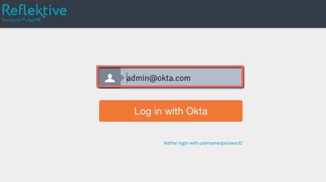

Contact Reflektive Support (support@reflektive.com) and request that they enable SAML 2.0 for your account.
Attach the following:
The Login URL/SignOn URL: Copy and page the following:
Sign into the Okta Admin Dashboard to generate this variable.
x509 Certificate: Copy and paste the following certificate in PRM Text Format:
Sign into the Okta Admin Dashboard to generate this variable.
Reflektive Support will process your request. After receiving a confirmation email, you can start assigning people to the application.
Done!
Notes:
IdP-initiated flows and SP-initiated flows are supported.
Just In Time (JIT) Provisioning is not supported.
For SP-initiated flows:
Go to the Reflektive login page page:
Enter your account email address then click Log in With Okta:
